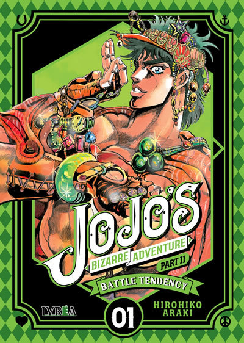
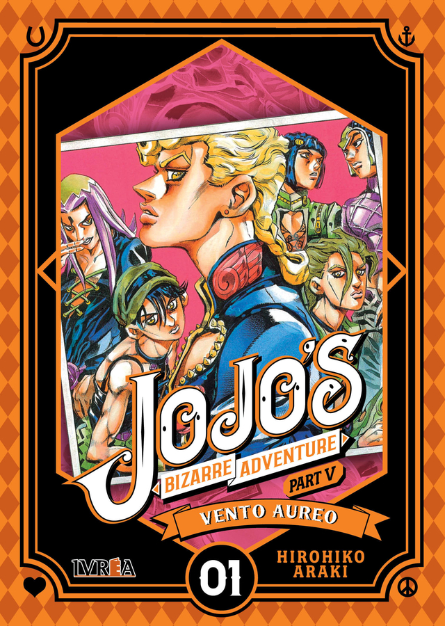
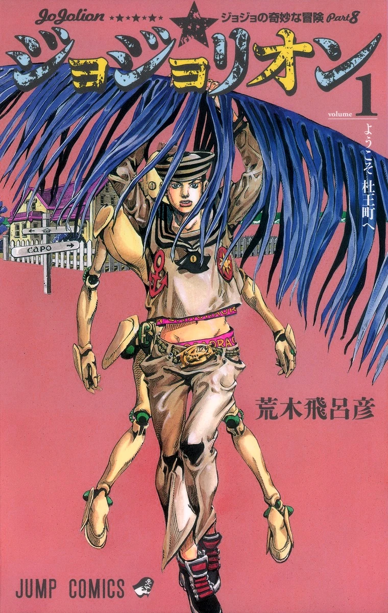
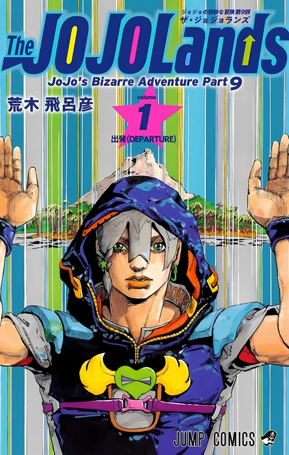

Primer universo
Phantom Blood

En Inglaterra de los 1880, Dio Brando trama un plan para tomar la fortuna de su familia adoptiva, los
Joestar, pero su hermano, Jonathan Joestar, lo trata de detener. Usando una misteriosa máscara de
piedra, Dio se convierte en un vampiro mientras que Jonathan aprende hamon, una técnica energética
basada en la respiración, para combatirlo.
La parte mezcla drama familiar, tragedia clásica, entrenamiento, amistad y sacrificio. Donde lo no
humano y lo humano se enfrentan.
Battle Tendency

En Norteamérica y Europa de 1938, Joseph Joestar —nieto de Jonathan Joestar— y Caesar Zeppeli
emprenden, junto a la maestra de hamon Lisa Lisa y al soldado alemán nazi Rudol von Stroheim, la
misión de derrotar a los hombres del pilar antes de que obtengan la piedra roja de aja, la cual les
permitiría convertirse en las formas de vida definitivas, invencibles, asegurando su dominio sobre
el mundo. Este protagonista es impulsivo, bromista, poco ortodoxo, astuto y vive metiéndose en
problemas.
Stardust Crusaders

En noviembre de 1988, tras un siglo atrapado en un ataúd, Dio Brando despierta apoderado del cuerpo
de Jonathan. Ante esta noticia, Joseph contacta a su nieto, Jotaro Kujo, para encontrar y derrotar a
Dio; pero se manifiesta el stand de
Holy Kujo —hija de Joseph y madre de Jotaro—, quien no puede controlarlo y cae en un coma en el cual
solo puede sobrevivir durante cincuenta días. Stardust Crusaders marca un antes y un después gracias
a la introducción de los Stands, manifestaciones espirituales con habilidades únicas.
Diamond is Unbreakable

En abril de 1999, en el pueblo japonés de Morioh, Jotaro Kujo contacta a su tío perdido, Josuke
Higashikata, para darle a conocer su ascendencia y advertirle sobre los peligros que una flecha de
stand que busca ha estado causando en el pueblo. Tras esto, Josuke y sus amigos se ven afectados y
en la necesidad de ayudarlo en su búsqueda. La parte se
destaca por su variedad: hay capítulos de comedia, tensión, terror y puro slice of life. Todo da un
giro cuando aparece el villano principal.
Vento Aureo

29 de marzo de 2001, Italia. Giorno Giovanna —hijo de Dio Brando— se une a la banda mafiosa de los
Passione y, junto al líder de su pandilla, Bruno Bucciarati, busca tener contacto con el anónimo
jefe de la banda para derrotarlo y acabar con los negocios de drogas que él promovía. Golden Wind es
una historia de lealtad, traición, ambición y redención. Destaca por sus batallas extremadamente
tácticas y psicológicas, con Stands muy complejos y situaciones límite.
Stone Ocean

28 de octubre de 2011, Florida. Jolyne Cujoh —hija de Jotaro Kujo—, una Joestar decidida e ingeniosa,
es encarcelada tras ser
involucrada en un crimen que no cometió. Dentro de la prisión descubre su Stand, Stone Free, y
también que su encarcelamiento forma parte de un plan mayor dirigido por Enrico Pucci, un sacerdote
obsesionado con cumplir la voluntad de DIO. La parte mezcla acción, tensión psicológica, giros
inesperados y temas como el destino, la libertad, la identidad y el sacrificio.
Segundo universo
Steel Ball Run

23 de septiembre de 1890, los Estados Unidos. Johnny Joestar, un ex jinete que recibió un disparo y
perdió el uso de sus piernas, así como su fama y fortuna. Junto a Gyro Zeppeli, un antiguo verdugo
maestro
del extraño arte del giro, participan en el Steel Ball Run, una carrera de caballos a través de todo
Estados Unidos, de San Diego a Nueva York, por 50 millones de dólares y buscan derrotar al presidente de
los Estados unidos. Los dos hombres comienzan como rivales, pero se acercan entre sí a medida que viajan
por el desierto y se enfrentan a los ataques de competidores violentos en la carrera.
Se recomienda como un buen lugar para comenzar para las personas que no leyeron partes anteriores debido
a que funciona como un reinicio de la serie, aunque se pierden muchas referencias y es una experiencia
mas completa verlo desde el inicio. No decepciona al lector en ningún momento. Una historia intensa que
logra hacerte sentir parte de ella, contando con una de las mejores amistades en los cómics. Esta parte
es considerado por muchos fans como la obra maestra de Araki.
Un homenaje a Phantom Blood, Battle Tendency y Stardust Crusaders.
Jojolion

19 de agosto de 2011, Morioh. S-City, M-Prefecture fue devastada por el terremoto y tsunami de Tōhoku en
2011. A continuación, aparecen estructuras extrañas conocidas como los Ojos de Muro en toda la ciudad de
Morioh. Cuando la estudiante universitaria Yasuho Hirose encuentra a un joven misterioso enterrado bajo
uno de los Ojos de la Pared. El joven tiene un Stand, él y Yasuho buscan su identidad. Primero creyendo
que se llama "Yoshikage Kira", aunque Yasuho siente que el nombre "Josuke" encaja mejor con él. Inician
su aventura juntos para tratar de ayudarlo a recuperar los recuerdos de su vida y su verdadera
identidad.
De acuerdo con una nota de Araki, el -lion en el título se deriva del griego antiguo εὐαγγέλιον
(evangelio), en referencia a los Evangelios. "Al combinar esta palabra con "JoJo", intentaba que el
título significara la existencia del protagonista "Josuke" en este [otro] mundo". Las opiniones sobre
JoJolion son variadas y divididas, pero la mayoría concuerda en que es una parte con aspectos muy
positivos, como su estilo artístico, el desarrollo de personajes clave,Stands únicos y momentos
memorables. Pensarlo en retrospectiva, permite apreciar mejor su complejidad narrativa y los detalles
simbólicos que quizás se pasaron por alto en la lectura inicial.
Un homenaje a Diamond is Unbreakable.
The JOJOLands

En Hawái de 2023, Jodio Joestar, el nieto de Joseph Joestar, un estudiante de secundaria que sigue su
objetivo de volverse un gánster asquerosamente rico mediante los "mecanismos" de su vida diaria.
Trabajando junto a su hermano/a Dragona y su compañero de clase cleptómano Paco Laburantes, Jodio es
dirigido en las actividades de pandillas por su directora, Meryl May Qi. La trama inicia con el plan de
Jodio para robar un diamante valioso, lo que lo lleva a enfrentarse a un nuevo hombre piedra y a un
misterioso millonario japonés.
A día de hoy se teoriza que es la contraparte de Vento Aureo, la quinta parte del universo original,
debido a sus temáticas sobre criminales, pandillas y organizaciones criminales/corruptas.
Algunos lectores están muy enganchados a los personajes y su química, mientras que otros señalan una
falta de interés general en el manga en comparación con partes anteriores. Se ubica en un contexto nuevo
y con una narrativa innovadora. Actualmente se encuentra en publicación.
Un homenaje a Golden Wind y Stone Ocean.